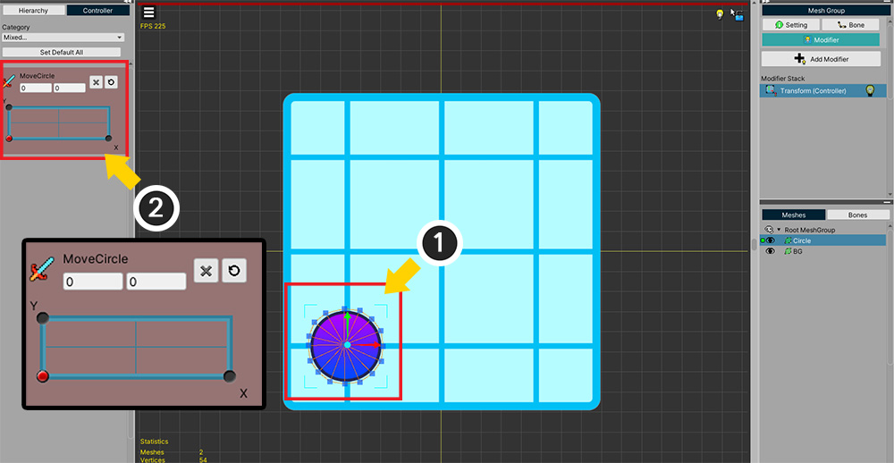
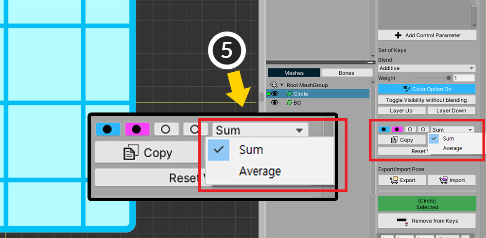

AnyPortrait > 메뉴얼 > 슬롯을 이용한 복사/붙여넣기
슬롯을 이용한 복사/붙여넣기
1.3.0
컨트롤 파라미터를 이용하는 모디파이어를 이용할 때, 2개 이상의 키(Key)에서의 값을 합친 결과를 만들어야 하는 경우가 있습니다.
예를 들면, 왼쪽을 향하는 모습과 위쪽을 향하는 모습을 합쳐서 왼쪽 위의 대각선 방향을 향하는 모습을 만드는 경우입니다.
이 페이지에서는 2개 이상의 키값을 복사하기 위하여 슬롯(Slot)을 이용하는 방법을 다룹니다.
참고
이 기능은 컨트롤 파라미터를 이용하는 모디파이어에만 지원됩니다.

Transform (Controller) 모디파이어를 이용한 간단한 예제를 구성해보았습니다.
(1) 메시가 왼쪽 아래에 위치해 있습니다.
(2) Vector2 타입의 컨트롤 파라미터로 메시의 위치를 제어합니다.
컨트롤 파라미터도 왼쪽 아래를 기준으로 합니다.

컨트롤 파라미터에 맞게 메시가 왼쪽 위와 오른쪽 아래에 위치하도록 만들었습니다.
즉, 메시는 컨트롤 파라미터에 따라 위쪽(+Y)으로 움직이거나 오른쪽(+X)으로 움직입니다.

(1) 왼쪽 위(+Y), 오른쪽 아래(+X)의 메시의 위치값들을 합성하여 (2) 오른쪽 위(+XY)에 메시가 위치하도록 만들어봅시다.

복사/붙여넣기를 하기 전에, 일단 새로운 키(Key)를 추가합니다.
(1) 오른쪽 위쪽에 컨트롤 파라미터 슬라이더를 위치시킵니다.
(2) 키를 생성합니다.

두개의 키값(+Y와 +X)을 복사해서 붙여넣어봅시다.
(1) 먼저 왼쪽 위(+Y)로 컨트롤 파라미터를 이동시킵니다.
(2) 이 키에서는 메시가 기준 위치에서부터 위로(+Y) 이동합니다.
(3) 첫번째 슬롯을 선택합니다.
(4) Copy 버튼을 눌러서 메시의 위치를 해당 슬롯에 저장합니다.

슬롯에 저장을 하면 위와 같이 비어있는 원에서 색칠된 원으로 버튼이 바뀝니다.

같은 방법으로 두번째 값도 복사합시다.
(1) 컨트롤 파라미터를 오른쪽 아래(+X)로 이동시킵니다.
(2) 두번째 슬롯을 선택합니다.
(3) Copy 버튼을 눌러서 값을 슬롯에 저장합니다.

이제 저장된 두개의 값을 합쳐서 붙여넣습니다.
(1) 앞서 새로 생성했던 키를 선택합니다.
(2) 첫번째 슬롯을 클릭 합니다.
(3) 두번째 슬롯을 Ctrl+클릭 합니다. (Mac에서는 Command+클릭 하면 됩니다.)
(4) 두개의 슬롯이 선택되었습니다.
- 푸른색 슬롯 : 클릭 하면 다른 슬롯의 선택이 취소되고, 클릭한 슬롯만 선택됩니다. Copy 버튼을 누르면 이 슬롯에 저장됩니다.
- 보라색 슬롯 : Ctrl+클릭 하면 추가적으로 해당 슬롯이 선택되고, 이때 버튼의 색상은 보라색이 됩니다.
- 슬롯은 최대 4개를 선택할 수 있습니다.

(5) 값을 어떤 방식으로 합성할지를 선택할 수 있습니다. 먼저 Sum 방식을 선택해봅시다.

(6) Paste 버튼을 누릅니다.
(7) 두개의 값이 합쳐져서 오른쪽 위로 이동한 메시를 볼 수 있습니다.
즉, "+X"와 "+Y"가 합쳐져서 "+XY"의 위치로 메시가 이동한 결과입니다.

(1) 이번에는 Average 방식을 선택하고 (2) Paste 버튼을 눌러봅시다.
(3) 메시가 가운데 위치하는 것을 볼 수 있습니다.
"+X"와 "+Y"의 평균 위치로 이동한 것입니다.
여러개의 객체들의 값을 동시에 복사하기
1.3.2
AnyPortrait v1.3.2에서는 여러개의 객체들을 선택한 후, 각각에 해당하는 모디파이어의 값을 동시에 슬롯에 저장하고 복사할 수 있습니다.
다만, 이 기능은 하나의 객체를 선택할 때와 별개로 동작하므로 아래의 설명을 읽어보실 것을 권장합니다.

설명을 위해 위와 같은 예제를 준비했습니다.
1개의 파란색 메시와 3개의 주황색 메시들이 있습니다.
Transform (Controller) 모디파이어가 등록되어 있으며, 컨트롤 파라미터에 3개의 키(Key)가 생성된 상태입니다.

모디파이어에 등록된 컨트롤 파라미터의 3개의 키(Key) 중 두개의 키에서 메시들은 각각 왼쪽, 오른쪽으로 이동합니다.

슬롯에 값을 저장하고 복사하는 기능은 1개의 객체를 대상으로 할 때와 여러개의 객체들을 대상으로 할 때 각각 독립적으로 동작합니다.
먼저 1개의 객체를 대상으로 값을 저장해봅시다.
(1) 메시들이 왼쪽으로 이동하도록 컨트롤 파라미터의 값을 변경합니다.
(2) 파란색 메시만 선택합니다.
(3) 첫번째 슬롯을 선택합니다.
(4) Copy 버튼을 눌러서 메시가 왼쪽으로 이동하는 상태를 저장합니다.

이번엔 반대로 여러개의 객체들을 대상으로 값을 저장해봅시다.
(1) 메시들이 오른쪽으로 이동하도록 컨트롤 파라미터의 값을 변경합니다.
(2) 이번엔 파란색 메시를 포함해서 모든 메시들을 선택합니다.
(3) 첫번째 슬롯을 선택합니다.
(4) Copy 버튼을 눌러서 메시들이 오른쪽으로 이동하는 상태를 저장합니다.

이제 저장된 값을 적용해보고 차이점을 확인해봅시다.
(1) 복사된 값을 적용하기 위해 컨트롤 파라미터의 값을 변경합니다.
(2) 모든 메시들을 선택합니다.
(3) 첫번째 슬롯이 선택된 상태에서 (4) Paste 버튼을 누릅니다.
(5) 메시들이 오른쪽으로 이동하는 것을 볼 수 있습니다.
여러개의 메시들이 선택된 상태에서 Paste 버튼을 누르면 여러개의 메시들이 선택된 상태에서 저장된 값이 적용되기 때문입니다.

(1) 반대로 파란색 메시만 선택해봅시다.
(2) 동일하게 첫번째 슬롯을 선택하고 (3) Paste 버튼을 누릅니다.
(4) 이번엔 파란색 메시가 왼쪽으로 이동하는 것을 볼 수 있습니다.
한개의 객체가 선택된 상태에서는 한개의 메시가 선택된 상태에서 저장된 값이 적용됩니다.
위의 내용을 정리하면 다음과 같습니다.
- 한개의 객체를 선택한 경우와 여러개의 객체들을 선택한 경우의 두가지 경우로 구분하여 값이 저장됩니다.
- 한개의 객체를 선택한 경우에 저장된 값은 다른 객체에도 가능한 적용될 수 있습니다.
- 여러개의 객체들을 선택한 경우에는 저장된 값이 해당 객체에만 적용됩니다.
- 여러개의 객체들을 선택한 경우에도 슬롯들의 값을 병합해서 적용하는 것이 가능합니다.